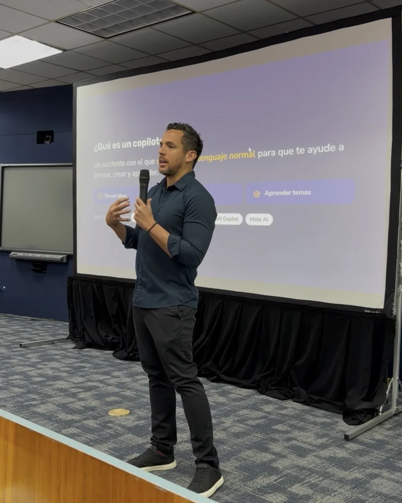
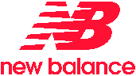

Marketing desde el negocio
Antes de la idea, el número.
Asesoría para conseguir y retener clientes, con tu marketing conectado a los números de tu negocio: clientes, ventas y caja.
Test gratis de 6 preguntas. Sabrás en qué nivel está tu marketing y qué hacer primero para que traiga ventas. 1 minuto, resultado al instante.
El mismo mes, visto como…
¿Y cuánto vendimos? Este reporte no lo dice.
Toca "Negocio" · Ejemplo ilustrativo
Preguntar
Primero, qué tiene que pasar en el negocio. Después, qué piezas hacer.
Proponer
Cada idea amarrada al número que tiene que mover.
Reportar
Ventas primero. El alcance explica, no es el resultado.
El problema
Marketing reporta atención. La dirección evalúa dinero.
Los equipos y las agencias reportan alcance, clics, reproducciones y engagement. La dirección decide con lo que cuesta conseguir un cliente, cuánto vuelve a comprar y cuánto deja.
El problema no es la creatividad ni el equipo. Es que los dos números no están conectados.
El cambio
¿Qué número del negocio tiene que moverse?
Esa pregunta va antes de cualquier campaña, y se aplica en 3 momentos. Un ejemplo: un restaurante cuyos clientes vienen 1 vez y no vuelven.
Cómo se levanta la necesidad.
"¿Qué piezas necesitas y para cuándo?"
"¿Qué tiene que pasar en tu negocio y qué lo está frenando?"
Cómo se arma la propuesta.
"12 posts, 4 reels y 1 influencer."
"Tus clientes vienen 1 vez. Esta campaña busca que vuelvan, y lo vamos a contar en 60 días."
Cómo se demuestra el resultado.
"45,000 de alcance y 1,200 interacciones."
"Regresaron 180 clientes en 60 días. El reel que más canjes trajo recibe más presupuesto."
Metodología
Así se ve un cliente saludable.
Arriba, el camino que recorre tu cliente. Abajo, lo que hacemos para que lo recorra. Toca un paso.
Validamos qué mensaje corta el ruido antes de invertir en escala.
Alcance · costo por atenciónEducamos: el problema, la solución, la visión de la marca y cómo se compra.
Consideración · leadsQuitamos obstáculos del camino de compra y amplificamos solo lo probado.
Conversión · CACDiseñamos la experiencia que convierte la primera compra en recompra.
Retención · LTVUn ciclo, no un embudo: lo que aprendemos al retener vuelve a escuchar.
Servicios
Te ayudamos a conseguir y retener clientes
Para dueños y gerentes de empresas que ya venden y ya invierten en marketing, pero no saben qué parte de ese gasto les trae clientes.
-
01Gratis · 30 min
Diagnóstico
Revisamos tu negocio y te decimos en qué paso del journey se pierden tus clientes.
- Dónde se cae tu cliente: te ve, te entiende, te compra o vuelve
- Qué número tiene que moverse primero
-
02Asesoría
Estrategia
Diseñamos contigo cómo tu negocio capta, convierte y retiene clientes, paso a paso.
- Mapa del journey de tu cliente y dónde se pierde
- Plan de acción: escuchar, construir confianza, escalar y retener
- Tablero de CAC, LTV y retención como punto de partida
-
03Mensual
Acompañamiento
Medimos, ajustamos y movemos el presupuesto a lo que funciona, con tu equipo o tu agencia ejecutando.
- Reporte mensual en números de negocio
- Qué canal sube, cuál baja y cuál se corta
Otras formas de trabajar · Asesoría Marketing desde el Negocio
Para agencias y equipos de marketingTu equipo aprende a proponer y reportar en números de negocio. 9 h en 5 sesiones. Para dueños sin equipo de marketingDefine qué necesita tu negocio, elige quién ejecuta y exige resultados en ventas. 6 h en 4 sesiones 1 a 1.Cómo empezar
Tres pasos. El primero toma 1 minuto.
Haz el test
6 preguntas para saber en qué nivel está tu marketing.
Recibe tu resultado
Tu nivel y lo que necesitas hacer, al instante.
Diagnóstico gratis
30 minutos para ver tu caso y definir el camino.
Caso · Café Cucuá
De commodity a robusta de especialidad
Antes de invertir en producir, validamos con tostadores, baristas y cafeterías. Ese hallazgo cambió el producto, el modelo y el precio.

Mario Quirós R.
Consultor de marketing, conectando marca y resultados desde 2013.
Mi trabajo es que el marketing hable el idioma del negocio: cuánto cuesta cada cliente, cuánto vale y en cuánto tiempo se recupera la inversión.
He liderado estrategias de crecimiento en sectores como Fintech, Consumo Masivo y Tecnología, y fundé mis propias empresas, incluyendo una agencia de marketing digital y una operación de logística durante la pandemia.
Esa trayectoria, incluidos el P&L y el voto en junta directiva en Tafi, me dio una ventaja difícil de replicar: hablar el idioma de marketing y el de la dirección financiera.
Mentor del Programa de Incubación de Startups de Ciudad del Saber, el ecosistema de innovación y emprendimiento de Panamá.
Algunas marcas con las que ha trabajado a lo largo de su carrera

¿En qué nivel está tu marketing?
Descúbrelo en 1 minuto. Después, si quieres, lo vemos juntos en un diagnóstico gratis de 30 minutos.
Sin compromiso · 30 minutos